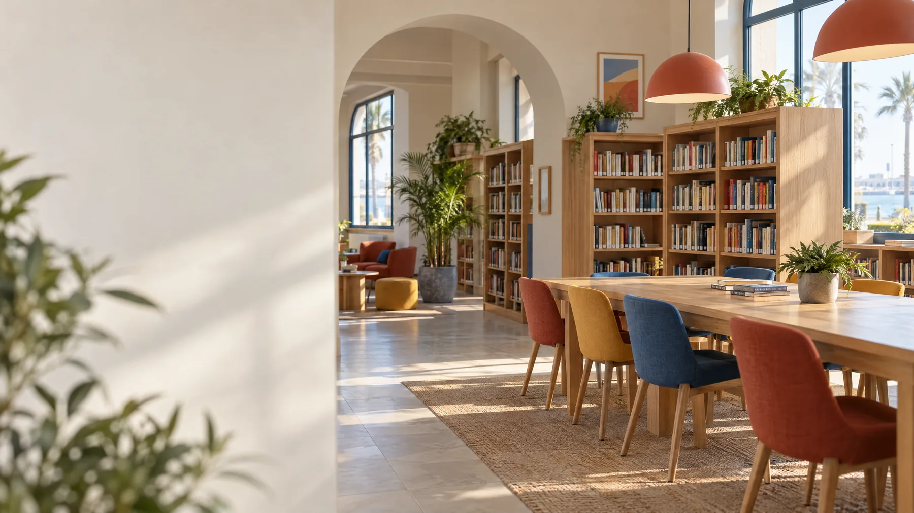

ابدأ بالبحث
اكتب عنوان الكتاب أو اسم مؤلفه أو رقمه العام. ويمكنك اختيار مكتبة أو الاقتصار على النسخ المسجلة كمتاحة.
انتقل إلى فهرس الكتببوابة واحدة تساعدك على اكتشاف الكتب، والتحقق من أماكنها، والوصول إلى مكتبات المدارس المشاركة في بورسعيد.

مسار بسيط للبحث عن كتاب وفهم بياناته قبل زيارة المكتبة.
اكتب عنوان الكتاب أو اسم مؤلفه أو رقمه العام. ويمكنك اختيار مكتبة أو الاقتصار على النسخ المسجلة كمتاحة.
انتقل إلى فهرس الكتبمتاح تعني أن السجل المنشور يذكر نسخة متاحة؛ وغير متاح الآن تعني أنه لا تظهر نسخة متاحة في ذلك السجل. قد تتغير الحالة قبل الزيارة.
راجع بيانات المكتباتقد لا يكون الكتاب مسجلاً أو منشوراً بعد. خلوّ نتائج الفهرس لا يعني خلوّ رفوف المكتبة؛ لا تظهر إلا السجلات التي تنشرها المكتبة.
جرّب بحثاً آخرروابط إلى مواقعها الأصلية؛ ليست نتائج كتب مدمجة في فهرس مكتبات بورسعيد.
مكتبة عربية غير ربحية تتيح كتباً للقراءة من الموقع الأصلي؛ قد تتطلب بعض المزايا حساباً لدى المصدر.
تصفّح كتب صفحات يفتح في موقع خارجينصوص من الملكية العامة أو برخصة حرة؛ تحقّق من حقوق كل عمل، فهي تختلف بحسب بلد النشر.
افتح ويكي مصدر يفتح في موقع خارجيكتب مجانية كثيرة، معظمها بالإنجليزية ومن الملكية العامة في الولايات المتحدة؛ تحقّق من حقوق العنوان في بلدك.
ابحث في Gutenberg يفتح في موقع خارجياكتشف الكتب واستعر نسخاً رقمية محددة عندما تكون متاحة؛ الاستعارة تتطلب حساباً لدى Open Library.
استكشف الإعارة الرقمية يفتح في موقع خارجيقد يعرض مقتطفاً أو صفحات كاملة بحسب الناشر والبلد؛ لا يعني ظهور الكتاب أن نصه الكامل متاح.
ابحث في Google Books يفتح في موقع خارجييساعدك على اكتشاف المكتبات التي تقتني كتاباً؛ الفهرس لا يضمن قراءة رقمية مباشرة.
ابحث في WorldCat يفتح في موقع خارجيابحث عن الكتب في Open Library، ثم افتح المصدر الأصلي. نعرض زر القراءة أو الاستعارة فقط عندما يؤكد Open Library حالة النسخة الرقمية.
يبدأ البحث بعد كتابة عبارة أو اختيار اقتراح. لا توجد نتائج تجريبية، ولا نحمّل النصوص المحمية أو نرفع كتباً إلى الموقع.
اكتب عنواناً أو مؤلفاً لبدء البحث المباشر.
مصدر الفهرس: Open Library، مبادرة من Internet Archive. قد تختلف الإتاحة والحقوق حسب النسخة والبلد؛ تحقّق منها في المصدر قبل القراءة أو الاستعارة.
تابع مستجدات التعليم من جهات دولية، وابحث في بيانات أوراق ومنشورات تعليمية مفتوحة الوصول. نوجّهك إلى الناشر أو سجل البحث الأصلي بدلاً من نسخ المقالات.
تتضمن الروابط فهارس أخبار وصفحات تجميع ومخرجات وموجزات RSS؛ تختلف طريقة عرض المواد وتواريخها من مصدر لآخر.
أخبار عن برامج ومبادرات التعليم من اليونسكو، مع إمكان التصفّح حسب البلد والسنة.
افتح أخبار التعليم في موقع اليونسكوالمصدر: UNESCOرصد منتقى لأخبار ومقالات وتقارير وطنية ودولية حول تخطيط التعليم وإدارته؛ قد تعبّر المواد عن وجهات نظر ناشريها الأصليين.
افتح رصد التعليم في موقع معهد اليونسكو للتخطيط التربويالمصدر: International Institute for Educational Planningصفحة تجمع الأخبار والقصص والتقارير والمصادر البحثية حول التعليم والمهارات في بلدان مختلفة.
افتح صفحة التعليم في موقع مجموعة البنك الدوليالمصدر: World Bank Groupصفحة تعريف بالمديرية وروابط إلى مخرجات منشورة، منها تقارير وأوراق عمل وملخصات سياسات؛ ليست موجز RSS.
استكشف المخرجات في موقع منظمة التعاون الاقتصادي والتنميةالمصدر: OECD Directorate for Education and Skillsصفحة تعريف تربط بموجزات XML لأخبار وفعاليات التعليم والتدريب التقني والمهني؛ لا تعرض المواد الحية نفسها.
تفاصيل موجزات RSS في موقع UNESCO-UNEVOCالمصدر: UNESCO-UNEVOCهذه روابط إلى مواقعها الأصلية وليست تغطية تحريرية صادرة عن مكتبات بورسعيد. لا ننسخ الأخبار الخارجية أو نصفها بأنها حصرية.
بيانات بحثية من فهرس عالمي؛ يعرض هذا البحث السجلات التي يصنفها OpenAlex مفتوحة الوصول، مرتبةً بالأحدث.
تُرسل عبارة البحث مباشرة إلى OpenAlex عند البحث، وتُضاف إلى رابط ERIC وتُرسل إليه فقط عند فتحه. لا يحفظ هذا الموقع عبارة البحث؛ وقد تعالج الخدمات الخارجية الطلب وفق سياساتها. العناوين والمؤلفون وسجلات الوصول بيانات خارجية نعرضها كنص فقط.
اكتب موضوعاً لبدء البحث؛ لا تُحمّل نتائج تلقائية أو محفوظة.
مصدر بيانات البحث: توثيق OpenAlex API. وصف «مفتوح الوصول» مأخوذ من سجل OpenAlex؛ قد يفتح الرابط صفحة الناشر أو المستودع، ولا يعني تلقائياً أن النص PDF أو أن الدراسة محكّمة. تحقّق من نوع المنشور والرخصة لدى المصدر الأصلي.
هذا الموضع مخصص للتقارير والأخبار المحلية المعتمدة. لا توجد مواد أصلية منشورة فيه الآن؛ ولن نملأه بأخبار منقولة على أنها حصرية. الإعلانات العامة الحالية متاحة في قسم الإعلانات.
لا تمثل الروابط أو السجلات المعروضة اعتماداً أو شراكةً أو تأييداً من الجهات المذكورة. تُفتح المواد في مواقعها الأصلية وتخضع لسياساتها وحقوقها.
اكتب عنواناً أو اسم مؤلف أو رقماً عاماً، ثم استكشف النتائج المنشورة.
لا يعرض الفهرس العام حالياً عناوين منشورة. لا يعني ذلك عدم وجود كتب بالمكتبات؛ ستظهر السجلات عندما تنشر المكتبة بيانات العنوان والفرع والنسخة.
كيف أستخدم الموقع؟تعرّف على الفروع المنشورة، ثم تحقق من إتاحة الكتب قبل الزيارة.
لا يعني ذلك عدم وجود فروع؛ لن نعرض إلا البيانات التي تعتمدها المكتبة وتنشرها.
معلومات ثابتة للاستخدام العام؛ لا تُعرض هنا إعلانات غير معتمدة.
قد تتغير حالة النسخ المنشورة؛ راجع الفرع ووسيلة التواصل المعتمدة قبل التوجه. لا توجد إعلانات تشغيلية أخرى منشورة في هذا القسم حالياً.
إرشاد فوري عن طريقة البحث والإعارة والقراءة والفروع، مع البحث في الفهرس العام المنشور.
من تسجيل الكتاب برقم عام إلى متابعة الحركة والتقارير، كل خطوة لها مكان واضح.
للموظفين وأمناء المكتباتابحث عبر الفروع عن العنوان أو المؤلف أو رقم الكتاب، واعرف الإتاحة المنشورة.
رقم عام، رقم نسخة، تصنيف، فرع، دولاب ورف؛ لتقليل الالتباس وقت الجرد.
إعارات ومرتجعات، حجوزات داخلية، طلبات بين الفروع، وتصدير جداول الجرد.
دخول مخصص للمستخدمين الذين أضافهم مسؤول المكتبة؛ لا يوجد تسجيل مفتوح.